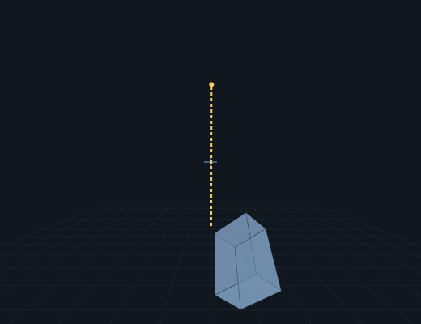
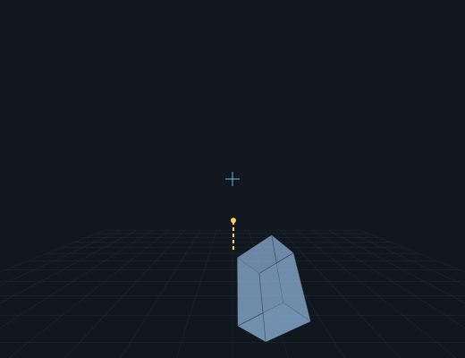
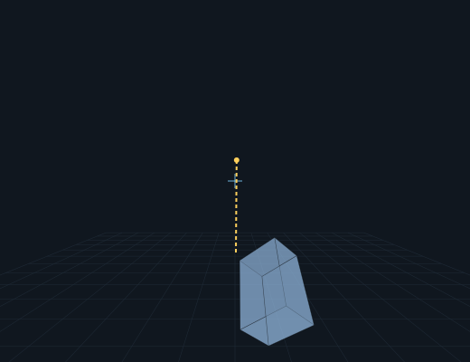
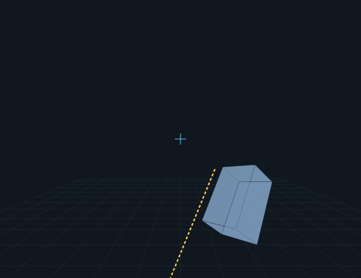
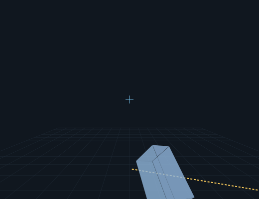
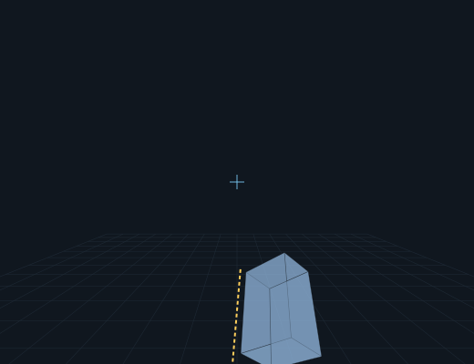

current (broken)
r=[-45,-22,-41]
f=[-69,0,0]
e=[145,-46,0]
hand[0.004, -0.336, -1.213] tip[0.007, 0.528, -1.578] dir[0.00,0.92,-0.39]

blade-only-fix (math-best)
r=[-45,-22,-41]
f=[-69,0,0]
e=[150,-140,45]
hand[0.004, -0.336, -1.213] tip[0.007, -0.349, -2.151] dir[0.00,-0.01,-1.00]

clean forward
r=[-45,-22,-41]
f=[-69,0,0]
e=[180,0,0]
hand[0.004, -0.336, -1.213] tip[0.012, 0.163, -2.008] dir[0.01,0.53,-0.85]

straight forward attempt
r=[-60,-22,-41]
f=[-90,0,0]
e=[0,0,0]
hand[0.195, -0.171, -1.125] tip[-0.205, -0.898, -0.690] dir[-0.43,-0.78,0.46]

rest-thrust-attempt
r=[-15,-30,-15]
f=[-110,0,0]
e=[60,0,0]
hand[0.017, -0.490, -1.000] tip[0.530, -0.217, -0.264] dir[0.55,0.29,0.78]

low-grip-forward
r=[-30,-22,-41]
f=[-90,0,0]
e=[0,0,0]
hand[0.015, -0.378, -1.125] tip[-0.063, -0.931, -0.372] dir[-0.08,-0.59,0.80]
